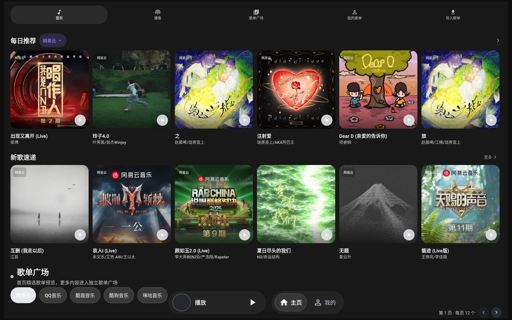
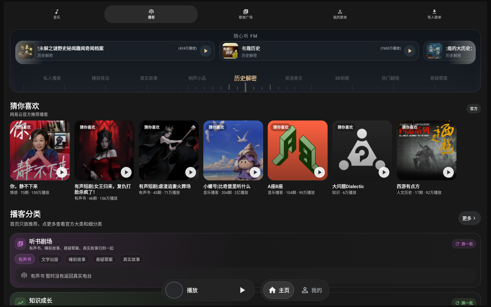
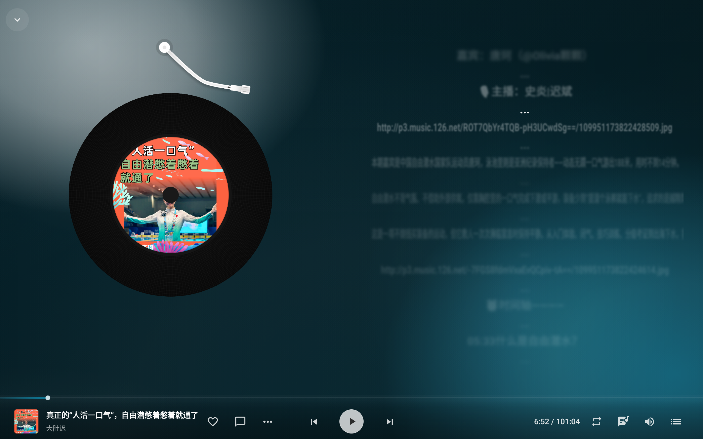

面向车机、平板和横向大屏的 Android 音乐播放器，支持落雪插件。

软件界面截图。

软件界面截图。

软件界面截图。
| 项目 | 要求 |
|---|---|
| Android 系统 | Android 8.0（API 26）及以上 |
| 处理器 | armeabi-v7a 或 arm64-v8a 的 Android 车机 / 平板 |
| 内存 | 2 GB RAM 及以上 |
| 屏幕 | 建议 1280 × 720 及以上横向屏幕 |
| 网络 | 需要可用网络 |
| 可用存储 | 至少预留 1 GB；下载歌曲时需额外预留媒体文件空间 |
| 项目 | 建议 |
|---|---|
| Android 系统 | Android 10（API 29）及以上 |
| 处理器 | 64 位 arm64-v8a |
| 内存 | 4 GB RAM 及以上 |
| 屏幕 | 1280 × 720、1920 × 720 或更高分辨率横向屏幕 |
当前截图对应版本：2.5.19（44）。Android 8.0 是项目实际最低系统版本；其他项目为对外推荐配置。